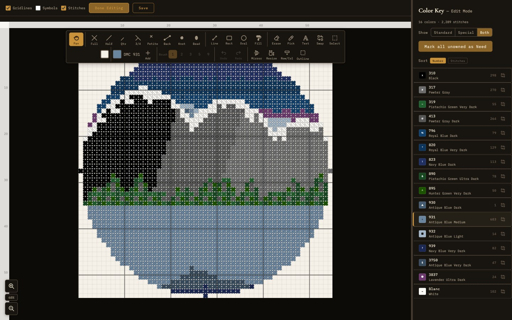

Pattern Design
Create cross-stitch patterns from images or from scratch using a full-featured design editor.

The pattern editor with drawing tools, stitch types, and color legend
Creating Patterns
Needlework Studio offers two ways to start a new pattern, both accessible from the Create menu in the navigation bar.
Image to Pattern
The Image-to-Pattern converter transforms any photograph or image file into a stitchable cross-stitch chart. The workflow is as follows:
- Upload an image - Select or drag-and-drop a file. Supported formats: JPEG, PNG, WebP, BMP, GIF (up to 10 MB).
- Configure grid size - Set the width of the resulting pattern in stitches, from 10 to 500. The height is calculated automatically to maintain aspect ratio. You can lock or unlock the aspect ratio.
- Set color count - Choose how many thread colors the pattern should use, from 2 to 256. Fewer colors produce a simpler, more stylized result; more colors capture finer gradients.
- Adjust image settings - Use the contrast and brightness sliders to tweak the image before conversion. A palette filter (Standard, Historical, or Modern) controls which subset of thread colors is used. You can also select the thread brand (DMC or Anchor) and toggle pixel art mode for sharp, un-antialiased output.
- Choose dithering - Dithering simulates additional colors by interleaving stitches. Options include no dithering (solid blocks) and Floyd-Steinberg (smoother gradients).
- Crop the image - An inline crop tool lets you select the region to convert. Crop shapes include rectangle, square, ellipse, and circle.
- Generate - Click generate to produce the pattern. The converter quantizes image colors to the nearest thread colors and produces a grid chart with a real-time preview and color key.
After generation, the pattern opens in the design editor where you can refine it with the drawing tools described below.
Blank Canvas
The Blank Canvas option creates an empty grid at custom dimensions that you specify. Enter the desired width and height in stitches to create the canvas. This is ideal for designing patterns entirely from scratch - lettering, geometric designs, borders, or original artwork.
Drawing Tools
The pattern editor provides 12 tools in the toolbar. Select a tool by clicking its icon or pressing the corresponding keyboard shortcut.
Hand / Pan
Click and drag to pan the canvas. You can also hold Space with any other tool active to temporarily switch to pan mode. Press H to select this tool.
Pencil
The primary drawing tool. Click or click-and-drag to place stitches of the currently selected color on the grid. The pencil respects the current brush size setting, allowing you to draw single stitches or larger blocks at once.
Eraser
Removes stitches from the grid. Click or drag to erase stitches. Like the pencil, the eraser respects the current brush size. Erased cells revert to the empty (background) state.
Fill (Bucket)
Flood-fills a contiguous region of the same color with the currently selected color. Hovering over a region shows a preview highlight of the area that will be filled before you click. Click on any stitch to replace all connected stitches of that color with the new color.
Line
Draws a straight line of stitches between two points. Click to set the start point, then click again to set the end point. The line is rendered using the current color and brush size. Lines snap to pixel-aligned angles for clean results.
Rectangle
Draws a rectangular outline or filled rectangle. Click to set one corner, then click again to set the opposite corner. You can toggle between outline-only and filled modes. Useful for borders, frames, and geometric designs.
Ellipse
Draws an elliptical or circular shape. Click to set the center, then drag to set the radius. Like the rectangle tool, you can toggle between outline and filled modes. On a stitch grid, circles and ellipses are approximated to the nearest whole stitches.
Eyedropper
Samples the color of a stitch on the canvas and sets it as the active color. Click any stitch to pick up its color. This is a quick way to switch to a color that is already in use in your pattern without searching through the color palette.
Replace Color
Replaces every instance of one color with another across the entire pattern. Select the replacement color, then click on any stitch of the color you want to replace. Every stitch of the target color in the pattern will change to the new color. This is a global operation and is useful for swapping thread colors throughout a design.
Select
Selects a rectangular region of the canvas. Click and drag to define the selection area, then drag to move it. Use Ctrl+C to copy, Ctrl+V to paste, and Delete to clear the selected stitches. The selection is shown with a marching-ants border.
Stitch
Places specialty stitch types on the grid. Unlike the pencil tool which places full cross-stitches, the stitch tool lets you place the seven different stitch types described in the section below. Select the desired stitch type from the stitch picker before placing.
Text
Renders text onto the canvas using system fonts. Type your text, choose a font from the fonts installed on your system, set the size, and click to place it on the grid. The text is rasterized to stitches and becomes part of the pattern. This is particularly useful for adding names, dates, messages, or decorative lettering to your designs.
Stitch Types
Needlework Studio supports eight stitch types that correspond to the standard stitches and embellishments used in counted cross-stitch embroidery.
Full Stitch
The standard cross-stitch - an X shape that covers one square of the fabric grid. This is the most common stitch type and the default for the pencil tool. Full stitches are displayed as solid colored squares on the chart.
Half Stitch
A single diagonal line covering half of a grid square, going either from bottom-left to top-right or from top-left to bottom-right. Press ` (backtick) to toggle the direction. Half stitches are used for lighter coverage, backgrounds, and blending effects. They use approximately half the thread of a full stitch.
Quarter Stitch
A small diagonal stitch that covers one quarter of a grid square. Quarter stitches start from a corner and end at the center of the square. They are used for fine detail work and smooth diagonal edges, especially in realistic or photographic patterns.
Three-Quarter Stitch
A combination of a half stitch and a quarter stitch, covering three-quarters of a grid square. This stitch type is commonly used to create smoother curves and diagonal lines than full stitches alone can achieve. It is especially useful for lettering and organic shapes.
Petite Stitch
A small cross-stitch that occupies one quarter of a grid square. Petite stitches are smaller than regular full stitches and are used for fine detail in areas where a full-sized stitch would be too coarse. They are treated as quarter-weight stitches in the materials calculator.
Backstitch
A straight line stitch used for outlines, borders, and fine detail. Backstitches run along the edges of grid squares (rather than filling them) and can be placed horizontally, vertically, or diagonally. They are typically stitched after all cross-stitches are complete and are essential for defining shapes and adding crispness to a design.
French Knot
A small raised dot placed at the intersection of grid lines. French knots are used for eyes, flower centers, decorative dots, and other small accent details. They are represented on the chart as small circles or dots at grid intersections.
Beads
Beads are placed on individual grid cells to represent seed beads or other small beads stitched onto the fabric. They are shown on the chart as small diamond shapes and are exported alongside other stitch data in all supported formats.
Brush Sizes
Several tools (including the pencil and eraser) support adjustable brush sizes. The available sizes are:
- 1x1 - Single stitch. The most precise option for detailed work.
- 2x2 - A block of four stitches. Good for filling small areas quickly.
- 3x3 - A block of nine stitches. Useful for medium-scale fills.
- 5x5 - A block of twenty-five stitches. Speeds up large area work.
- 9x9 - A block of eighty-one stitches. The largest brush for rapid coverage of big areas.
Canvas Operations
Mirror and Symmetry Modes
Symmetry modes duplicate your strokes across an axis. When enabled, every stitch you place is mirrored on the opposite side of the canvas. Available modes include horizontal mirror (left-right), vertical mirror (top-bottom), and quad symmetry (both axes at once). Press M to cycle through the modes. These are especially useful for symmetric motifs, borders, and mandala-style patterns.
Undo and Redo
The editor maintains a history of up to 50 levels of undo and redo. Press Ctrl+Z (or Cmd+Z on macOS) to undo the last action, and Ctrl+Y (or Cmd+Shift+Z) to redo. You can also use the undo and redo buttons in the toolbar. The history tracks all drawing operations, color changes, and canvas modifications.
Canvas Resize
You can resize the canvas after creation without losing your existing work. Press Ctrl+Shift+R to open the resize dialog. Enter new dimensions and choose an anchor position that determines where the existing content is placed within the new canvas. For example, anchoring to the top-left adds empty space to the right and bottom, while anchoring to the center adds equal space on all sides.
Row and Column Insert / Delete
Insert or delete individual rows and columns at any position in the grid. Right-click a ruler number to insert or delete at that position. Existing stitches shift to accommodate the change. This is useful for adjusting spacing, adding a border row, or removing an unwanted column without resizing the entire canvas.
Minimap
A small overview of the entire pattern is shown in the corner of the editor. The minimap highlights the portion of the canvas currently visible in the main viewport. Click or drag on the minimap to jump to a different part of the pattern quickly.
Autosave and Recovery
The editor autosaves your work to the browser's local storage every few seconds. If you close the tab or your browser crashes, the next time you open the editor you will be prompted to recover your unsaved work. Autosave data is retained for 7 days.
Keyboard Shortcut Help
Press ? in the editor to open a help overlay listing all keyboard shortcuts for tools, stitch types, and canvas operations.
Pattern Statistics
The editor displays pattern statistics including total stitch count, dimensions, and per-color stitch counts. These update as you draw and are visible in the legend panel.
Color Management
The color palette panel in the editor displays all colors currently used in the pattern. From this panel you can:
- Add colors - Open the thread picker to add new DMC or Anchor colors to your pattern's palette. The picker supports search by number or name.
- Replace colors - Swap one color for another throughout the entire pattern using the Replace Color tool.
- Batch operations - Remove unused colors from the palette, or perform bulk color adjustments.
Keyboard Shortcuts
Press ? at any time to see the full list in the editor. The most common shortcuts:
- H - Hand / pan tool
- P or W - Pencil tool
- E - Eraser tool
- F - Fill tool
- L - Line tool
- T - Rectangle tool
- O - Ellipse tool
- I - Eyedropper tool
- X - Text tool
- R - Replace color tool
- S - Selection tool
- 1–7 - Stitch types (half, quarter, three-quarter, petite, backstitch, French knot, bead)
- M - Cycle mirror mode (off → horizontal → vertical → both)
- ` - Toggle half-stitch direction
- Space (hold) - Temporary pan
- Ctrl+Z / Cmd+Z - Undo
- Ctrl+Y / Cmd+Shift+Z - Redo
- Ctrl+S / Cmd+S - Save pattern
- Ctrl+Shift+R - Resize canvas
- Ctrl+C / Ctrl+V / Delete - Copy / paste / clear selection